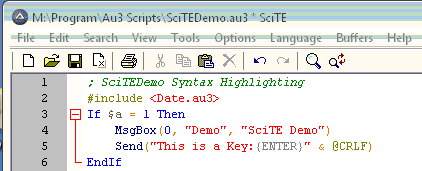
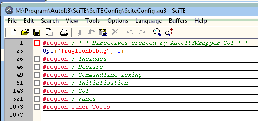

Syntax Highlighting
SciTE has a custom lexer for AutoIt3 which applies colouring to the text depending on the syntax.
Here is an example of the default colours:

As you can see, the different colours make it easy to distinguish between the various elements of the text. This can also help prevent you making syntax errors when you see that elements of your code do not appear in the expected colours.
Syntax Folding
The custom lexer also contains folding logic to enable you to fold (or collapse) your script into easily manageable blocks of code.
Here is a section of SciTEConfig.au3 folded to show how this looks - as you can see over 1000 lines have been reduced to a mere 9. Once you have found the area you want to work on, just expand that fold by clicking on the [+]:

This folding logic works on all keyword that require a structure, such as If...ElseIf...Else...EndIf, While...WEnd, Do...Until, For...Next, etc, on comment blocks using #cs...#ce, and on any block of lines commented with ;
There is an additional folding keyword #region...#endregion to permit really large blocks of code to be compressed. Any text following these special keywords is considered a comment: